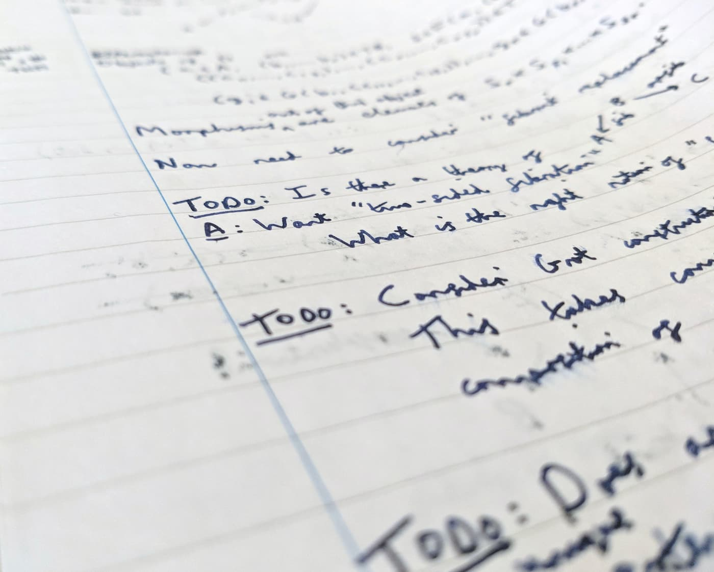

Last summer I did an eight week mathematics research project, as mentioned in my previous post. This was my first real taste of mathematical research, and so I tried to write up some of my thoughts on lessons learned while they were still fresh in my mind. I just recently got around to editing this into a publishable form.
I’m sure very little of this is new to those of you who have experience in research – but I find it hard to remember what was difficult once I’m very used to something, so I hope there’s value in me writing this.
Writing up unfinished work
When given a very open ended research problem, often my instinct is to sit and think about it in my head, considering the story that might be told by a solution. I think thinking without writing is valuable – it forces you to think at a high level, and not get bogged down in technical details. Perhaps this is why people often solve a problem on a walk or in the shower. Other times I think with rough paper, jotting down my thoughts, doing little calculations, trying to come up with appropriate notation or shorthand. Under ideal circumstances, paper can act as an extension of your working memory, and frees up your brain to notice connections and simplifications which you wouldn’t have seen otherwise. Knowing what to write down and how best to write it is a skill that I would like to improve at.
These ways of thinking worked about as well as I’d expected. What took me by surprise was the value of slowing down and doing a proper (for me, \(\LaTeX\)ed) writeup, even of ideas which were unfinished or didn’t quite work. Every time I did this I didn’t expect to find anything new, and yet I always did. Sometimes I had previously skimmed over technical details or slight mismatches between different parts of an argument, and these would turn out to hint at something important about the problem, or even suggest new questions which are more interesting than the original problem. Other times parts of my work would be incredibly tedious to put rigorously into words, and finding notation and simplified arguments to explain these more compactly might make it easier to see how to go further, or to generalise the ideas. In the future I intend to do careful writeups earlier and more often.
Getting unstuck
When I first started working more independently, I often found I was stuck – I was confused about something, or I didn’t know what to look at next. I later found a method which was quite consistent in allowing me to make more progress. I would look back over my recent work, and make a list of small tasks to do which would improve my general understanding, even if they weren’t oriented at the particular problem I was stuck on. The easier the task, the better – I would often do things like checking details of results which seemed obvious, working through special cases and concrete examples, trying to understand why certain conditions were necessary, or investigating things I was confused about from papers that I had read. By the time I had worked through these tasks, I had usually cleared up a couple of misconceptions, and had come up with ideas for further small tasks. Eventually, once I had a much clearer understanding of the problem, I would see where to go next.